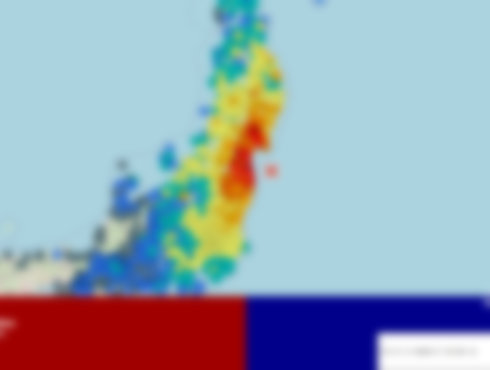

EarthQuickly For Web について
このサイトは気象庁発表の地震情報を取得して、地図上に表示するサイトです。
このサイトは開発中です。正常に動作しない場合などが予想されるため、ほかの情報ソースと併用するようにしてください。
謝辞
気象庁発表の地震情報を、P2P地震情報 JSON API v2から取得しています。
震度配色に、compo031さん制作の「Kiwi Monitor カラースキーム 第2版」の一部を利用しています。
その他
制作者 : Ameuma773 / Twitter : @Ameuma773
このサイトのソースは、githubに公開しています。